|
|
|
|||||||||||||||||||||||||||||||||||||||||||||||||||||||||||||||||||||||||||||||||||||||||||||||||||||||||||||||||||||||||||||||||||||||||||||||||||||||||||||||||||||||||||||||||||||||||||||
|
Basic Tasks |
|
|
Intermediate Tasks |
|
|
Advanced Tasks |
|
Access points in the Main Messenger Mail window for the Compose Message window:
Toolbar
Menu
Msg Context Menu
New Message
Message Menu
New Message
Reply
Reply to all
Forward
Forward As ( Inline, Attachment)
Edit Message as NewFolder selected:
- New MessageMessage selected:
- Reply to Sender Only
- Reply to Sender and All Recipients
- Forward as Inline
- Forwarded as AttachmentAccess points in the Compose Message window for Compose Message:
Toolbar
Menu
Msg Context Menu
None
File Menu
New _-> Message
None
General changes to the Compose Message window are described here.
Current Window (4.5):
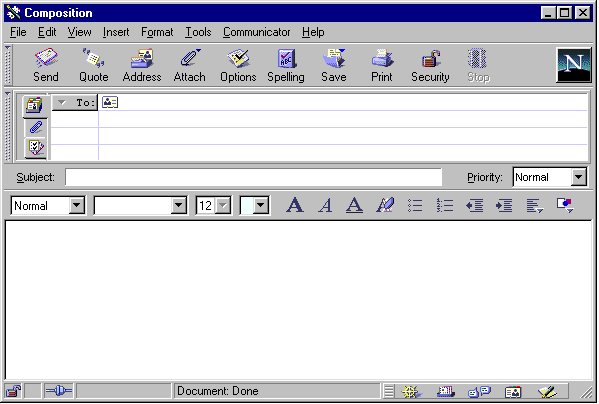
Proposed Window (5.0):
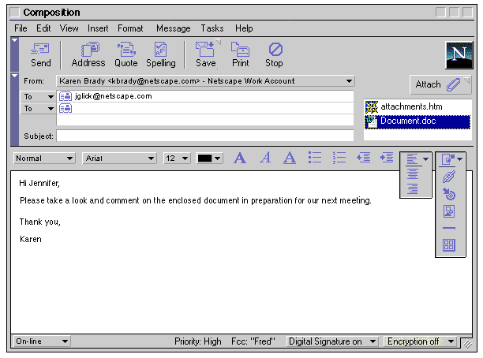
Other Variations -1
Other Variations -2
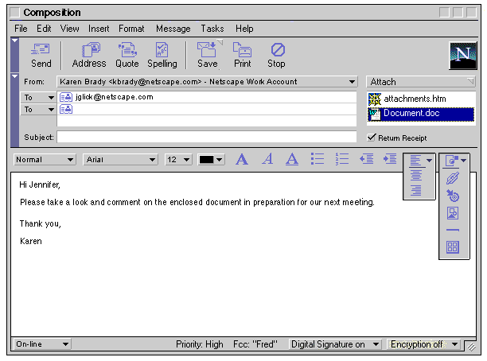
Other Variations -3
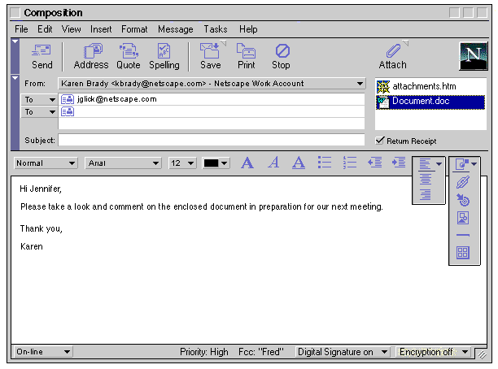
Other Variations - 4
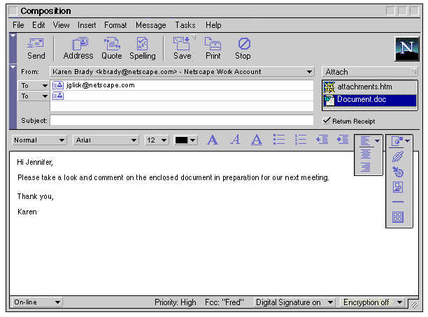
General Changes:
- Incorporation the new cross platform look and feel.
- Tabs (Address, Attachment, Options) are removed. Most users are not aware of the purpose of the tabs or what kinds of features they contain.
- "Options" button is removed from the Toolbar (This button brought the Options tab to the front). There will no longer be an "Options" tab. Items currently on the "Options" tab will be exposed to the user in other ways.
- "Communicator" menu is changed to "Tasks". Surveys have shown the majority of users have no idea what is "Communicator".
- Remove the "Tools" menu. Items currently in this menu are moved to other menus.
- Add a "Message" menu. All options related to the current message will be grouped here, such as Priority, Return Receipt, Fcc, Signature, etc.
- "From" non-editable dropdown list is added. If a user has multiple accounts, they can choose from which account the message will be show as from. This drop down menu will display a list of multiple accounts for the current user. If no other accounts are available, there are no other options in the list. The user defined account name is not displayed as part of the message header when messages are sent (i.e., "Netscape Work Account").
- Format" editable drop down list is removed from the Options tab and moved to the "Format" menu. The default action set by the user in preferences is displayed, but users can change this on a per message basis. For example, I normally have it set to ask me, but I know for this particular message that the person can only read plain text, so I change to format to plain text right here. Note: If the drop down is changed to "Plain Text only" the Ender Toolbar is disabled.
- "Priority" editable drop down list moved to the "Message" menu.
- "Security" button is removed from the Toolbar. Digital Signature and Encryption are displayed as drop down menus in the status bar area (see "Security" below). Note: the majority of users currently do Not use these features.
- "On-line" is displayed as a drop down list in the status bar area instead of an icon. Users can use the drop down list to toggle between on-line and off-line as well as get information/help about this feature. There is a push for 5.0 to convert current icons to text where appropriate.
- Attachments drop area is moved from the hidden tab to the Addressing area. This gives better feedback to users when attachments are included. Attachments button remains on the Toolbar OR is moved above the attachments drop area (tbd).
- "Return Receipt" is moved to the "Message" menu OR the Address Panel (previously in the Options tab).
Buttons that will be displayed on the Toolbar for 5.0 and their order are as follows:
Current (4.5):
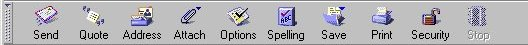
Proposed (5.0):
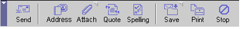
Note: "Attach" maybe removed and relocated to the right side of the window (see above).
Changes:
- New look and feel.
- New ordering and grouping based on functionality and frequency of use.
- Separate icons into groupings of related functionality and importance.
- "Options" (used to bring the Options tab of the Address Panel to the front) is removed since this tab is no longer used.
- "Security" is removed. See the "Security" section.
Changes to security features are discussed below.
Current (4.5):
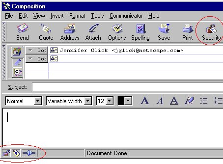
- Security features are displayed in the Toolbar and in the Status bar.
- Security icons (the open lock) are displayed to users whether or not they even have security option properties set up. In addition, the majority of user currently do not use (or really understand) the security features.
- If the message is Encrypted, the Lock icon is shown as closed, otherwise it is show as open. This is inconsistent with the browser, for which the lock indicates a secure/non-secure server (not encryption).
- If the message is Signed, the Sign icon is displayed, otherwise, it is not shown at all.
Proposed (5.0):
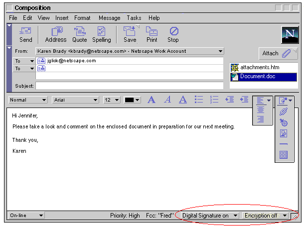
Changes:
- There is no "Security" button in the Toolbar.
- The open lock does not appear in the status bar.
- Security features are show as drop down list boxes on the right side of the status bar. (Icons included, TBD. Please see the Status Bar UI Spec.)
- Commercial builds will always show the security features menus (digital signature and encryption). Users can use the drop down security menus to access information about each feature, set up these features, or download these features if they currently are not included in their version of Messenger.
- Once users have the security features set up, they can use the drop down menus to access the different security features on a per message basis (turn encryption on/off, use different certificates).
- Mozilla.org builds will not contain the security features.
This section outlines the resulting actions when files are included, either attached or inline, in mail messages.Attached files are displayed within the attachment area (and not displayed in-line). Files can be attached using several methods.
- Using the "Attach" button on the Toolbar.
- Using the "File, Attach" menu item.
- Dragging and dropping onto the attachment area.
Files included in-line are displayed in-line within the message body during compose (and not displayed in the attachment area). Files can be attached using several methods:
- Using the "Insert" menu (Image and Link).
- Using the Ender Toolbar, "Insert Image" and "Insert Link".
- Dragging and dropping onto the message compose area
- If the file is not native, this is not allowed (accept with special key combinations, see table below).
- If the file is a native graphic file, the file is displayed inline.
- If the file is native and is an html file, the file is displayed inline (or as a link with special key combinations, see table below).
- Right mouse click within the compose area, "Insert new link".
A Graphic
To implement the recommendations, the Message Compose window would be modified as follows (or one of the variations listed above):
Global Preferences
With in the global preferences area, users can select how they want attachments to behave at viewing time.
- "When viewing mail messages, show attachments inline when possible". This is the same as currently implemented in 4.5.
Per Message Preferences
Users would also be able to override their global preference on a per message basis by using the "View" menu.
- When viewing a message: "Show attachments inline"
Plain Text Compose
In plain text message composition, files can be included as attachments but in-line inclusions of files are not available.
Table
The following table outlines the resulting actions:
File Type
Action
Show in Attachment Pane
Show Inline
Show as Link
Alternate Method or Behavior
Comments
Native Graphic File (jpg, gif)
Drop onto attachment area.
Yes
No
No
"File -> Attach" menu, or "Attach" button.
Native Graphic File (jpg, gif)
Drop onto message body.
No
Yes
No
"Insert -> Image" menu, or "Insert -> Image" from Ender toolbar.
Native Graphic File (jpg, gif)
Special Key + drag and drop onto message body.
No
No
Yes
Native Graphic File (jpg, gif)
Right Mouse drag & drop onto message body.
Maybe
Maybe
Maybe
A popup menu with options is displayed. (Insert as attachment, Insert inline, Insert as link, Cancel)
HTML File (local or networked)
Drop onto attachment area.
Yes
No
No
"File -> Attach" menu, or "Attach" button.
Relative graphic links included. Absolute graphic links not included.
HTML File (local or networked)
Drop onto message body.
No
Yes
No
Relative graphic links included. Absolute graphic links not included.
HTML File (local or networked)
Special Key + drag and drop onto message body.
No
No
Yes
"Insert -> Link" menu, or Ender Toolbar
"Insert Link"HTML File (local or networked)
Right Mouse drag & drop onto message body.
Maybe
Maybe
Maybe
A popup menu with options is displayed. (Insert as attachment, Insert inline, Insert as link, Cancel)
Bookmark
Drop onto attachment area.
No
No
Yes
Drop onto message body not allowed.
Page Proxy Icon
Drop onto attachment area.
No
No
Yes
Drop onto message body not allowed.
Non-Native File (Word, Excel, etc.)
Drop onto attachment area.
Yes
No
No
Drop onto message body not allowed.
Non-Native File (Word, Excel, etc.)
Special Key + drag and drop onto message body.
No
No
Yes
Non-Native File (Word, Excel, etc.)
Right Mouse drag & drop onto message body.
Maybe
No
Maybe
A popup menu with options is displayed. (Insert as attachment, Insert as link, Cancel)
Address Book Entry Icon
Drop onto attachment area.
Yes - Attach vCard
No
No
Drop onto message body not allowed.
Address Book
Drop onto attachment area.
Yes
No
No
Message or Thread Icon
Drop onto attachment area.
Yes - attach message
No
No
Drop onto message body not allowed.
Attachment specific changes are described here.
Current (4.5):
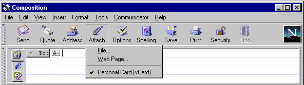
Proposed (5.0):
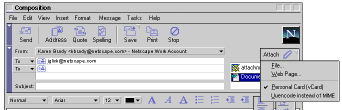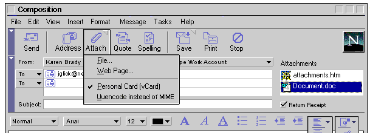
Attachment Changes:
- Attachments Tab is removed. Attachments drop area is moved from the hidden tab to the Addressing area. This gives better feedback to users when attachments are included. Attachments button remains on the Toolbar OR is moved above the attachments drop area (tbd).
- "Uuencode instead of MIME" is moved from the "Options" Tab onto the "Attach" Toolbar button drop down menu. Similar to the currently implementation of vCard, users can turn this feature on or off on a per message basis. When a new message is launched, the default is always what the user specified in their Preferences. Since this item is directly related to attachments, it is suggested it be relocated here.
- As for 4.5, clicking on the "Attach" button performs the default action of attaching a File (as opposed to a Web Page).
Attaching a File
Attaching a file to a mail message stays the same as for 4.5
Select the "Attach" button from the Toolbar and then "File..." from the drop down menu. The "Enter file to attach" dialog is opened.
OR, from the "File" menu, select "Attach --> File...".
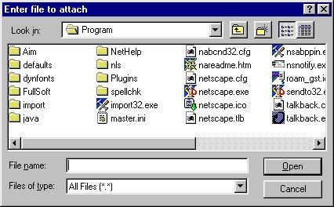
Attaching a Web page
The "Please Specify a Location to Attach" dialog is opened by:
|
Current (4.5): 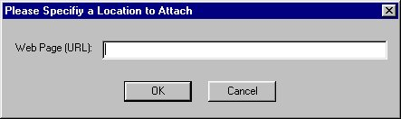 |
|
Proposed (5.0): 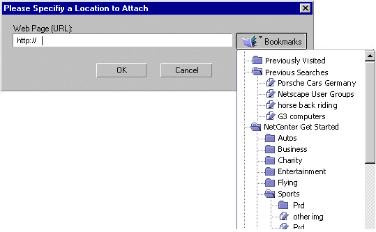
|
|
Changes:
|
This feature allows users to save a copy of a message being sent to a user specified folder on a per message basis. Since this is a feature intended for more advanced users, it is accessible via a menu dropdown only. A "Message" menu drop down will be added for the Message Compose window.
Basic functionality:
This feature raises the complex issue of how to select a desired folder in the world of multiple accounts.
NOTE: How we decide to implement the folder selection portion of this feature also affects features that work similarly, including: "File", "Move Message" and "Copy Message". Even if we decide to not implement Fcc, how we deal with folder selection in the world of multiple accounts needs to be solved.
|
Option 1:
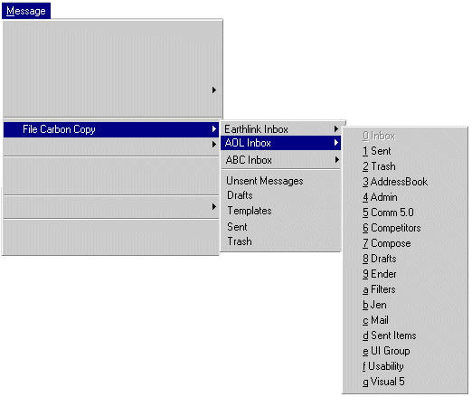 |
|
Option 2:
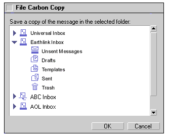 |
|
Current (4.5): 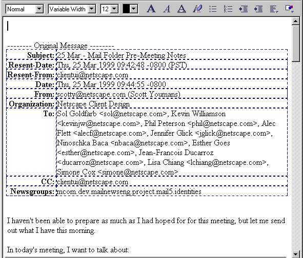 Currently, when forwarding a mail message:
|
|
Proposed (5.0): 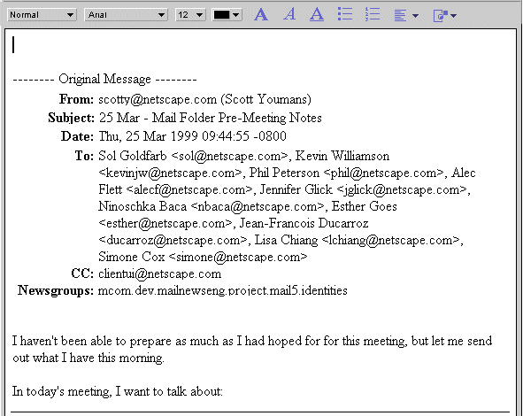 |
|
Changes:
|
No specific changes to the Reply window except those applied to the Message Compose window.
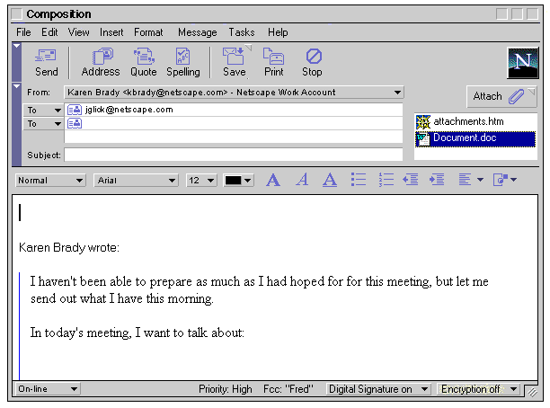
The Ender Toolbar component is an important part of the Message Compose window. It is important that this toolbar not be overwhelming with features, but be clear and provide easy access to the most commonly used HTML editing features.
Please see the complete Ender UE Spec for more details.
|
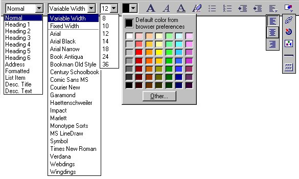 |
|
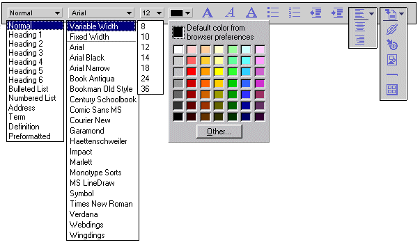 |
|
Users currently have problems understanding the items in the Ender Toolbar "Insert" drop down menu. One possibility would be to change this menu to include text. 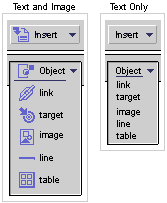 |
|
Changes:
|
Not yet complete.Please see the Message Compose Menus UE spec.
Change History